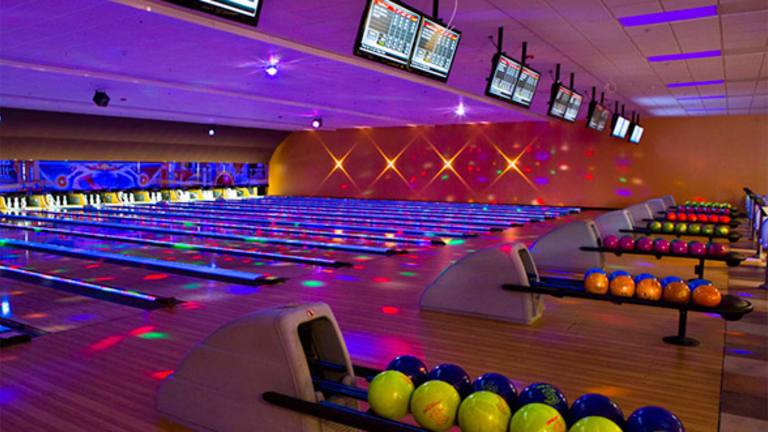
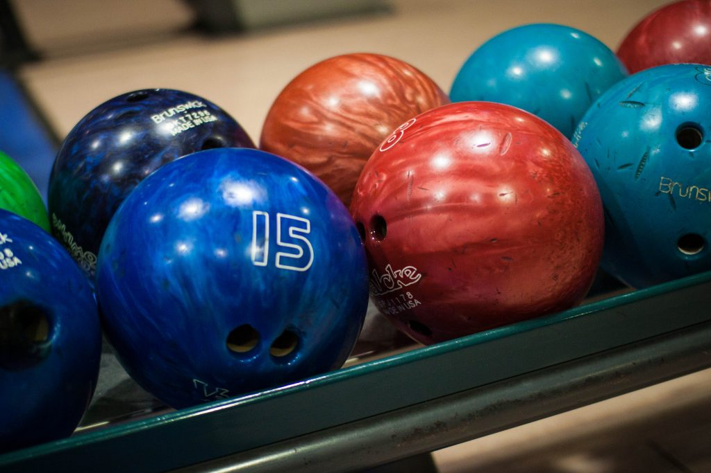
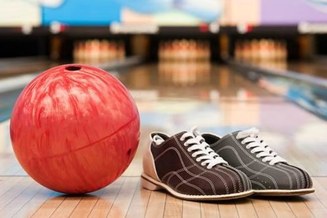

Indoor Bowling Media
Indoor Bowling Audio
Indoor Bowling Video
Bowling Description
Bowling is a target sport and recreational activity in which a player rolls a ball toward pins or another target. The term bowling usually refers to pin bowling, though in the United Kingdom and Commonwealth countries, bowling could also refer to target bowling, such as lawn bowls.
 Learn More...Bowling History
The modern sport of bowling at pins probably originated in ancient Germany, not as a sport but as a religious ceremony.The earliest form of bowling known to exist has been traced back to ancient Egyptian time, around 5,000 BC. The ancient Egyptians rolled stones at various objects with the goal of knocking them over. Over time, various varieties of bowling emerged from the Ancient Egyptian game.
 Learn More...Bowling Equipment
The technology and material used may have improved, but the standard equipment required of a player remains the same: a pair of bowling shoes and a bowling ball.
 Learn More...